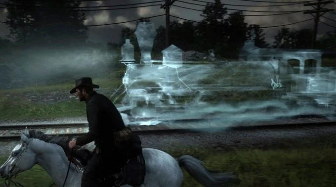
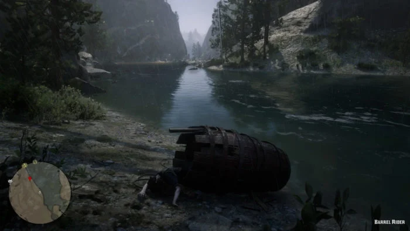
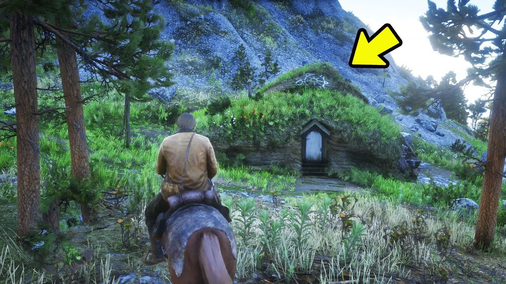
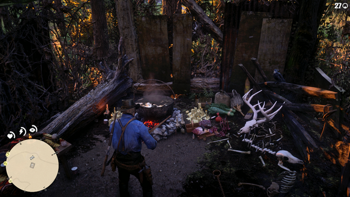
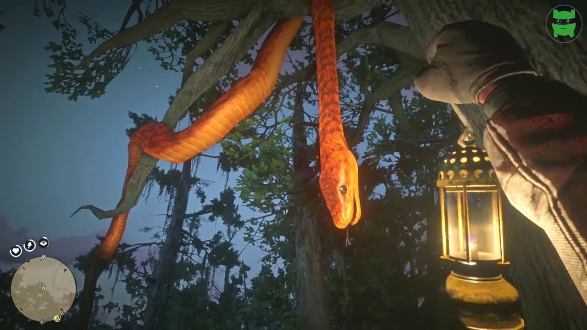

| 1. Trem fantasma |
|  |
| Se estiver perambulando pela região Noroeste de Lemoyne, por volta das 03:00 da manhã, experimente cavalgar ao lado da linha férrea por um tempo. Fique indo e voltando, sempre próximo à linha do trem e dentro dos limites de Lemoyne. Em algum momento, e isso é aleatório, você notará que seu cavalo começará a ficar inquieto. Este é um sinal de que o comboio fantasma está prestes a aparecer. Caso perca a aparição, você pode acampar em algum lugar por perto, dormir até a noite, e tentar outra vez. 2. A mulher no barril |
|  |
| Aos pés das Donner Falls, próximo da Bacchus Bridge, você vai encontrar o cadáver de uma mulher dentro de um barril semidestruído, que aparentemente caiu do alto da cachoeira. O easter egg é uma referência a Annie Edson Taylor, a primeira mulher a descer as cataratas do Niágara em um barril e sobreviver, em 1901. E sim, o caso inspirou aquele episódio do Pica-Pau. 3. A “casa do Bilbo” |
|  |
| Não é exatamente igual a uma casa de Hobbit, mas é impossível não se ligar na referência à franquia O Senhor dos Anéis ao avistar esta simpática portinha ornamentada num montinho de barro, pedras e capim. A região do esconderijo deste Hobbit renegado só fica acessível a partir do capítulo 2. A casinha fica muito bem escondida ao pé de uma montanha, a Leste de Donner Falls. 4. Bruxa de Blair perdida no Oeste |
|  |
| Em Witches Cauldron (Caldeirão das Bruxas), umas das regiões mais interessantes e peculiares do mapa, você poderá encontrar os destroços de um antigo casebre e, ao centro, um caldeirão com um líquido borbulhante. Qualquer pessoa sensata jamais cogitaria a possibilidade de beber o tal líquido de procedência duvidosa. Mas como sensatez não é o forte por aqui, dê uma provada no grude fervente e veja o que acontece. 5. Anaconda western |
|  |
| Numa região ao Norte de Rhodes, seguindo pela estrada principal, e próximo ao rio Kamassa, é possível encontrar uma referência a cobra Kaa, de Mogli: O Livro da Selva, da Disney. Como se trata de uma cobra enorme, laranja e reluzente é difícil de não vê-la pendurada, e morta, numa árvore. A parte decepcionante é que a interação com o réptil limita-se a atirar em sua cabeça e vê-la balançar. Nem ao menos é possível catalogá-la para seu manual. |